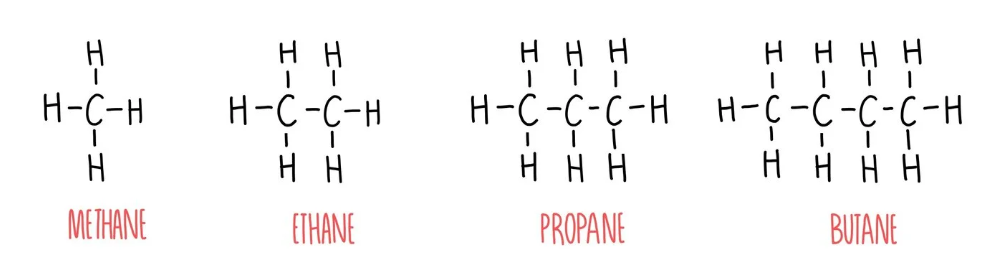
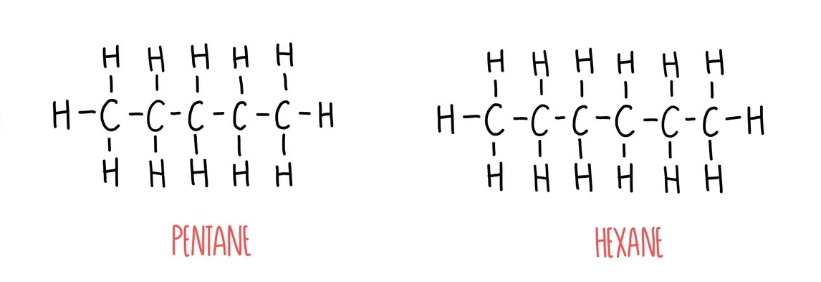

الألكانات (Alkanes)
هي هيدروكربونات مشبعة، تتكون فقط من الكربون والهيدروجين، وترتبط بروابط تساهمية أحادية قوية.
أنواع الألكانات
خطية (مستقيمة)
متفرعة
حلقية
الخواص الفيزيائية
1-4 كربون
5-17 كربون
18+ كربون
تزداد درجة الغليان والكثافة بزيادة عدد ذرات الكربون (الكتلة المولية).

أمثلة على الألكانات
فيما يلي أمثلة على بعض الألكانات المستقيمة السلسلة:
| الاسم | الصيغة البنائية |
|---|---|
| البنتان | CH₃–CH₂–CH₂–CH₂–CH₃ |
| الهكسان | CH₃–CH₂–CH₂–CH₂–CH₂–CH₃ |
| الهبتان | CH₃–CH₂–CH₂–CH₂–CH₂–CH₂–CH₃ |
| الأوكتان | CH₃–CH₂–CH₂–CH₂–CH₂–CH₂–CH₂–CH₃ |
| النونان | CH₃–CH₂–CH₂–CH₂–CH₂–CH₂–CH₂–CH₂–CH₃ |
| الديكان | CH₃–CH₂–CH₂–CH₂–CH₂–CH₂–CH₂–CH₂–CH₂–CH₃ |
(امثلة)
(امثلة)
اختبر معلوماتك!
ما هو لـ:
من مصادر طبيعية
أولاً: الغاز الطبيعي
يتكون الغاز الطبيعي بشكل أساسي من الميثان (CH₄)، وهو أبسط الألكانات. كما يحتوي على كميات أقل من الألكانات الأخرى ذات درجات الغليان المنخفضة مثل الإيثان (C₂H₆)، والبروبان (C₃H₈)، والبيوتان (C₄H₁₀). يتم فصل هذه المكونات عن طريق تبريد الغاز الطبيعي إلى درجات حرارة منخفضة جدًا، مما يؤدي إلى إسالة كل مكون عند درجة حرارة مختلفة ومن ثم فصله.
طبيعي
ثانياً: النفط الخام (التقطير التجزيئي)
النفط الخام هو خليط معقد للغاية من آلاف الهيدروكربونات المختلفة، بما في ذلك الألكانات ذات السلاسل الكربونية المتفاوتة في الطول. الطريقة الصناعية الرئيسية لفصل هذا الخليط إلى مكونات أبسط وأكثر فائدة هي التقطير التجزيئي.

برج التقطير التجزيئي يفصل النفط الخام إلى قطفات مختلفة بناءً على درجة الغليان.
خطوات عملية التقطير التجزيئي:
- يتم تسخين النفط الخام في فرن إلى درجة حرارة عالية (حوالي 400 درجة مئوية)، مما يؤدي إلى تبخر معظم مكوناته.
- يُضخ خليط البخار والسائل الساخن إلى أسفل برج تجزئة ضخم. يكون البرج شديد الحرارة في الأسفل وتتناقص درجة حرارته تدريجيًا كلما اتجهنا إلى الأعلى.
- ترتفع الأبخرة داخل البرج. عندما يرتفع بخار مكون معين إلى مستوى تكون فيه درجة حرارة البرج مساوية لدرجة غليانه، فإنه يتكثف على صوانٍ خاصة ويعود إلى الحالة السائلة ويتم سحبه.
- المكونات ذات درجات الغليان المرتفعة (جزيئات أكبر وسلاسل كربونية أطول) تتكثف في الأجزاء السفلية من البرج.
- المكونات ذات درجات الغليان المنخفضة (جزيئات أصغر وسلاسل كربونية أقصر) تستمر في الصعود إلى مستويات أعلى قبل أن تتكثف.
برج التقطير التجزيئي يفصل النفط الخام إلى قطفات مختلفة بناءً على درجة الغليان.
هدرجة الألكينات والألكاينات
تُعد هذه من أكثر الطرق شيوعًا وموثوقية في المختبر لتحويل المركبات غير المشبعة (التي تحتوي على روابط ثنائية أو ثلاثية) إلى ألكانات مشبعة. تتم العملية بإضافة غاز الهيدروجين بوجود عامل حفاز.

هدرجة الألكينات (Hydrogenation of Alkenes)
يتم إضافة جزيء هيدروجين (H₂) إلى الرابطة الثنائية (C=C) في الألكين بوجود عامل حفاز (Catalyst) مثل النيكل (Ni) أو البلاتين (Pt) أو البلاديوم (Pd) تحت ضغط وحرارة.
المعادلة العامة:
R-CH=CH-R' + H₂ --(حفاز)--> R-CH₂-CH₂-R'مثال: تحضير الإيثان من الإيثين.
CH₂=CH₂ (إيثين) + H₂ --(Ni, حرارة)--> CH₃–CH₃ (إيثان)هدرجة الألكاينات (Hydrogenation of Alkynes)
يمكن أيضًا هدرجة الألكاينات (التي تحتوي رابطة ثلاثية C≡C) لإنتاج الألكانات. يتطلب التفاعل ضعف كمية الهيدروجين (2 مول) لإشباع الرابطة الثلاثية بالكامل.
المعادلة العامة:
R-C≡C-R' + 2 H₂ --(حفاز)--> R-CH₂-CH₂-R'مثال: تحضير البروبان من البروباين.
CH₃-C≡CH (بروباين) + 2 H₂ --(Pd)--> CH₃-CH₂-CH₃ (بروبان)